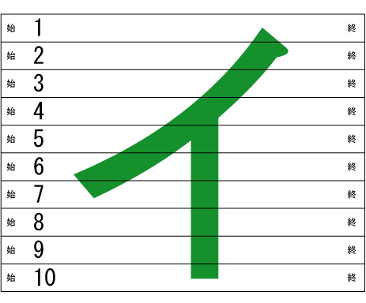
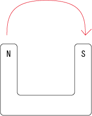
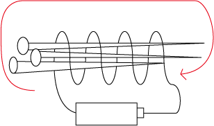
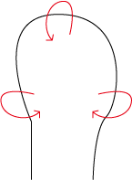
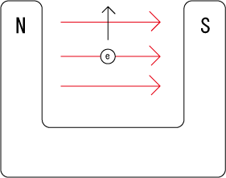
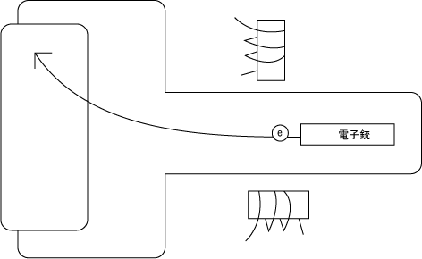
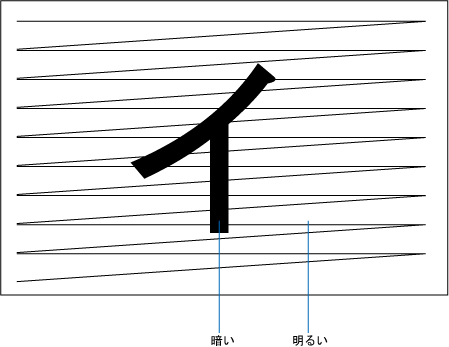

テレビの世界観です。機械いじりが子供のごろから好きだった父親の話を参考にしています。
モニターも参照のこと。
テレビは、離れたところにある映像を別の場所に送るために、走査という考え方を行う。
これは、画像をテープのように細切れにして、それぞれに番号と「始点・終点」のマークをつけ、画像を一つの電気信号に変換する。

ここでは、イという文字を10つの細切れの線に変え、その上で、それを一本の連続した電気信号に変換し、電波に乗せて電波塔から各家庭のアンテナに送り、それをブラウン管に表示させる。（最近は、ブラウン管ではなく、液晶ディスプレイが使われることが多い。）
ただ、本当は10本ではなく、もっとたくさんの細かい線を一本の連続した電気信号に変える。それを電波に乗せて、ブラウン管で一行ずつ表示し、遠くの場所でも映像が見られるようになる。
この方式を発明・実験したのは日本人の高柳健次郎である。彼はブラウン管による電送・受像を世界で初めて成功し、カタカナの「イ」の文字を走査線40本で送受信した。
まず、導線（電線）に電流を流すと、電子は電流として流れる。この時、磁界が右回りに発生する。
これは、以下の永久磁石の磁界と同じである。

鉄でできた釘にコイルを巻くと、永久磁石と同じ電磁石を作れる。これは、電流を流した時だけ磁界が発生する。

これはなぜかというと、以下のように、導線の周りの電磁力が、全て内向きに発生するからである。

そして、磁界中にある電子は、力を受けて動く。これがミソである。

ブラウン管は、ブラウン博士が発明した、画像を表示する装置である。以下のような構造になっている。

電子銃から飛び出した電子は、（何も電磁力の無い場合は）まっすぐ中央に飛んでくるが、それを縦と横の電磁石で向きを変えることによって、さまざまな方向に電子が飛ぶ。
ディスプレイの表面に「蛍光物質」が塗られており、電子が当たると光るようになっている。
また、ブラウン管の中は真空になっている。
ブラウン管に送られる電子銃の方向は、以下のように、右から左へと進んで繰り返しゼロに戻る。
これによって、以下のように画像を表示できる。

そして、電子銃で飛ばす電子の強弱をコントロールすることで、映像を表示する。明るい部分は明るく、暗い部分は暗くするために、強弱を調節する。
右から左に繰り返し表示し、明るさと暗さの調節をしながら映像を表示する。ここで「走査」が行なわれている。
偏光板とは、特定方向に入射してくる光だけを通し、それ以外の方向の光を遮断する特殊な板のこと。
液晶は、この偏光板を液体で作り出し、電圧によって整列させることで、光をシャットする。
液晶ディスプレイなどで、この技術が用いられている。
後日注記：液晶分子と偏光板に対して、電圧を通して液晶分子を整列させ、特定の方向に対する偏光パネルを作って、光をブラインドのように遮る。
2025.02.03編集
二枚の偏光フィルターを使って、液晶分子を電圧によって整列させる（0度あるいは90度に並び方を変える）ことで、そこを通る光を遮断したり通したりすることが可能になる。
詳しくは以下のようなページを参照のこと。
テレビとは、テレビジョンのこと。テレビジョンとは、「遠隔」を表すテレと、「映像」を表すビジョンの合成語。
テレビには、点の集まりである「画素」が存在し、画素が多ければ解像度（画面の精細さ）が高くなり、映像が綺麗になる。
今のテレビはカラーテレビであり、カラフルな色を表示できる。昔のテレビやカメラは白黒だった。
テレビにおいては、テレビ局のような商売のコンテンツ業者がほぼ映像の制作を独占し、個人では映像の制作をしなくなった。
これとはまったく正反対に、インターネットでは商売のコンテンツ業者ではなく、個人によってコンテンツが制作されている。
テレビ放送は、地上を伝わる電波である「地上波」と、人工衛星を使った「衛星放送」が存在する。現在の地上波ではかつてのアナログ放送が終了し、地上デジタル放送（地デジ）へと移行している。
また、このほかにケーブルテレビと呼ばれる有線での放送形態がある。ケーブルテレビにおいてはインターネット回線や電話回線もサービスとして提供される。
2025.09.09
新しいとても綺麗で高画質なテレビとして、4K・8Kが開発されている。最近では4K・8K対応の衛星放送も始まった。
まるで「実際の三次元空間を見ているよう」と表現され、まさに「別世界」である。新しいネットワークの「5G」とともに、新たな時代の放送・通信を担っていく。今、始まっている。
DVDレコーダーは、テレビ番組を録画して、後で見るために利用できます。主にハードディスクにデータを記録しますが、DVDにダビングすることもできます。
僕は昔、テレビでやっていたバック・トゥ・ザ・フューチャーの映画を見るために、DVDレコーダーを使ってテレビ放送を録画したことがあります。
ほかにも、放送大学でやっている授業を録画して後で視聴するためにも、DVDレコーダーを使います。
また、メジャーリーグの野球の試合を早朝にやっていたり、あるいはサッカーの国際試合を深夜にやっていたり、あるいは深夜にやっているアニメなどについても、DVDレコーダーは活用できます。
録画だけではなく、レンタルDVDショップでレンタルされている映画のDVDを見るためにも使います。父親などは「男はつらいよ」のDVDなどをよく見ています。
2024.06.10
DVDレコーダーで録画予約をする際には、ハードディスクの空き時間を確認しておきましょう。なんらかの理由（以前、毎週録画予約した番組の設定が生きていて、いつの間にか空き時間を食いつくすなど）で空き時間が使い果たされていた場合、正常に録画することができません。そのような場合は番組が始まった時点で録画がキャンセルされてしまいます。
また、番組を毎週同じ時間で録画予約した時に、たまに放送局のほうで番組の放送時間が変わることがあるので、そのような情報をネットのニュース記事などで見逃さないようにしましょう。
僕自身の経験（失敗談）については、2025-05-21、2025-06-03、2025-06-17、2025-07-05なども参照のこと。
2025.06.18
HDMIは、テレビにパソコンのモニター画面を表示させる時などに使うケーブル端子。すべてのAV情報を一本のケーブルで伝達できるのが特徴。
2025.04.16
映画・ドラマ・テレビ番組を参照のこと。
カメラを参照のこと。
電話を参照のこと。
モニターも参照のこと。
電波も参照のこと。
電磁気学も参照のこと。
漫画・アニメも参照のこと。
Netflixも参照のこと。